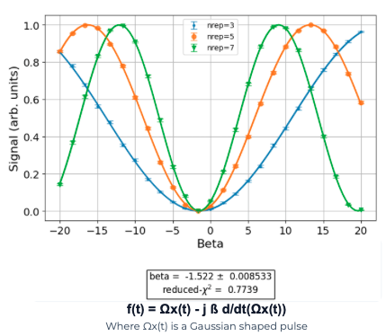

DRAG Pulse Calibration
Calibrate β so repeated gates agree — I/Q waveforms show what Rabi left flat and what DRAG adds.
Instructions
- Read the short prior-context note: Amplitude Rabi set how hard you push; DRAG sets pulse shape. Note the two-sentence I/Q primer before the waveform panel.
- Drag β and watch both panels update.
- Find the β region where the nrep curves meet; the crossing is a region, not a point — pick the center.
- After gates agree at least once, diagnose the lab β-sweep inset (same vocabulary), then continue in the Ising Calibration playground.
Keyboard: Tab to reach the β slider and buttons; arrow keys adjust β; Enter/Space activates Reset and playground actions; Esc resets to the off-optimal start (lab unlock persists once earned).
What this calibration step is for
Already known: Amplitude Rabi set the π-pulse strength — how hard you push.
This step finds: The DRAG parameter β that shapes the pulse. A poorly shaped π-pulse can drive population into |2⟩ or accumulate phase errors — both grow with repetition. You calibrate β by finding where repeated gates agree.
Controls
Live view
Quantum control hardware generates pulses with two components — I (in-phase) and Q (quadrature). A standard Rabi π-pulse uses only I; DRAG adds a specific Q-channel signal.
What DRAG does to the pulse — I/Q waveforms
I and Q on one time axis. I is a Gaussian envelope. Q is its derivative — flat at β equals zero and growing as β increases.
β = −0.70 ns · Q channel active
Energy levels |0⟩ |1⟩ |2⟩
A pulse’s shape in time determines its frequency content — a short Gaussian has broad frequency content that can reach ω12.
Three energy levels with gaps omega 0 1 and omega 1 2. Shaded spectral spill near omega 1 2 shrinks toward optimal β and grows again past it. Qualitative indicator only.
Spectral spill near ω₁₂
How you find β in the lab — β sweep
Repeated X gates — final |0⟩ population after nrep π-pulses (nrep = 3, 5, 7). Y-axis: P(|0⟩).
Three slightly noisy curves of P of zero versus β for 3, 5, and 7 repetitions. They meet in a broad region near the calibrated β. A gold marker shows the current β.
In practice the crossing is a region, not a point — you pick the center.
Results
max |P(|0⟩)n=3 − P(|0⟩)n=7|
Phase error / AC Stark: the drive shifts the qubit frequency slightly off resonance during the pulse, rotating it onto the wrong axis.
Real lab data — compare
Real Qblox DRAG β-sweep: Signal vs Beta for nrep = 3, 5, and 7. The three curves meet in a region; the fit marks the calibrated β (≈ −1.52 on this device). Hardware β units and range can differ from the interactive slider above — the signature to recognize is the crossing.
Under-corrected = gates disagree (β too small); Over-corrected = gates disagree (β too large); Calibrated = gates agree (center of the crossing region).

Real Qblox data: nrep = 3 (blue), 5 (orange), 7 (green). Fit β ≈ −1.52 at the crossing.